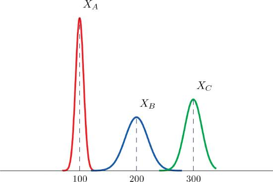

A very important concept in probability and statistics is that of the mathematical expectation, expected value, or briefly the expectation, of a random variable.
Find the expectation of a discrete random variable $X$ whose probability function is given by
$$
f(x)=\left(\frac{1}{2}\right)^{x} \quad (x=1,2,3, \ldots)
$$
A continuous random variable $X$ has probability density given by
$$
f(x)=\left\{\begin{array}{ll}2 e^{-2 x} & x > 0 \\
0 & x ≤ 0
\end{array}\right.
$$
Find (a) \(E(X)\) $\qquad$ (b) \(E\left(X^{2}\right)\)
The joint density function of two random variables \(X\) and \(Y\) is given by
$$
f(x, y)=\left\{
\begin{array}{ll}
x y/96 & 0 < x <4,\; 1 < y < 5 \\
0 & \text { otherwise }
\end{array}\right.
$$
Find (a) \(E(X)\quad\) (b) \(E(Y)\quad\) (c) \(E(X Y)\quad\) (d) \(E(2 X+3 Y)\)
A continuous random variable \(X\) has a uniform distribution on the interval \([5,12]\). Sketch the graph of its density function.
A continuous random variable \(X\) has a uniform distribution on the interval \([-3,3]\). Sketch the graph of its density function.
A continuous random variable \(X\) has a normal distribution with mean \(100\) and standard deviation \(10\). Sketch a qualitatively accurate graph of its density function.
A continuous random variable \(X\) has a normal distribution with mean \(73\) and standard deviation \(2.5\). Sketch a qualitatively accurate graph of its density function.
A continuous random variable \(X\) has a normal distribution with mean \(73\). The probability that \(X\) takes a value greater than \(80\) is \(0.212\). Use this information and the symmetry of the density function to find the probability that \(X\) takes a value less than \(66\). Sketch the density curve with relevant regions shaded to illustrate the computation.
A continuous random variable \(X\) has a normal distribution with mean \(169\). The probability that \(X\) takes a value greater than \(180\) is \(0.17\). Use this information and the symmetry of the density function to find the probability that \(X\) takes a value less than \(158\). Sketch the density curve with relevant regions shaded to illustrate the computation.
A continuous random variable \(X\) has a normal distribution with mean \(50.5\). The probability that \(X\) takes a value less than \(54\) is \(0.76\). Use this information and the symmetry of the density function to find the probability that \(X\) takes a value greater than \(47\). Sketch the density curve with relevant regions shaded to illustrate the computation.
A continuous random variable \(X\) has a normal distribution with mean \(12.25\). The probability that \(X\) takes a value less than \(13\) is \(0.82\). Use this information and the symmetry of the density function to find the probability that \(X\) takes a value greater than \(11.50\). Sketch the density curve with relevant regions shaded to illustrate the computation.
The figure provided shows the density curves of three normally distributed random variables \(X_A,\; X_B\; \text{and}\; X_C\). Their standard deviations (in no particular order) are \(15\), \(7\), and \(20\). Use the figure to identify the values of the means \(\mu _A,\: \mu _B,\; \text{and}\; \mu _C\) and standard deviations \(\sigma _A,\: \sigma _B,\; \text{and}\; \sigma _C\) of the three random variables.

Classify each random variable as either discrete or continuous.
The number of arrivals at an emergency room between midnight and \(6:00\; a.m\).
The weight of a box of cereal labeled “\(18\) ounces.”
The duration of the next outgoing telephone call from a business office.
The number of kernels of popcorn in a \(1\)-pound container.
The number of applicants for a job.
Classify each random variable as either discrete or continuous.
The time between customers entering a checkout lane at a retail store.
The weight of refuse on a truck arriving at a landfill.
The number of passengers in a passenger vehicle on a highway at rush hour.
The number of clerical errors on a medical chart.
The number of accident-free days in one month at a factory.
Classify each random variable as either discrete or continuous.
The number of boys in a randomly selected three-child family.
The temperature of a cup of coffee served at a restaurant.
The number of no-shows for every \(100\) reservations made with a commercial airline.
The number of vehicles owned by a randomly selected household.
The average amount spent on electricity each July by a randomly selected household in a certain state.
Classify each random variable as either discrete or continuous.
The number of patrons arriving at a restaurant between \(5:00\; p.m\). and \(6:00\; p.m\).
The number of new cases of influenza in a particular county in a coming month.
The air pressure of a tire on an automobile.
The amount of rain recorded at an airport one day.
The number of students who actually register for classes at a university next semester.
Identify the set of possible values for each random variable. (Make a reasonable estimate based on experience, where necessary.)
The number of heads in two tosses of a coin.
The average weight of newborn babies born in a particular county one month.
The amount of liquid in a \(12\)-ounce can of soft drink.
The number of games in the next World Series (best of up to seven games).
The number of coins that match when three coins are tossed at once.
Identify the set of possible values for each random variable. (Make a reasonable estimate based on experience, where necessary.)
The number of hearts in a five-card hand drawn from a deck of \(52\) cards that contains \(13\) hearts in all.
The number of pitches made by a starting pitcher in a major league baseball game.
The number of breakdowns of city buses in a large city in one week.
The distance a rental car rented on a daily rate is driven each day.
The amount of rainfall at an airport next month.
A discrete random variable \(X\) has the following probability distribution:
$$
\begin{array}{c|ccccc}x & 77 & 78 & 79 & 80 & 81 \\ \hline P(x) & 0.15 & 0.15 & 0.20 & 0.40 & 0.10\end{array}
$$
Compute each of the following quantities.
\(P(80)\).
\(P(X>80)\).
\(P(X\leq 80)\).
The mean \(\mu\) of \(X\).
The variance \(\sigma ^2\) of \(X\).
The standard deviation \(\sigma \) of \(X\).
Applications
Dogberry's alarm clock is battery operated. The battery could fail with equal probability at any time of the day or night. Every day Dogberry sets his alarm for \(6:30\; a.m.\) and goes to bed at \(10:00\; p.m.\). Find the probability that when the clock battery finally dies, it will do so at the most inconvenient time, between \(10:00\; p.m.\) and \(6:30\; a.m.\).
Buses running a bus line near Desdemona's house run every \(15\) minutes. Without paying attention to the schedule she walks to the nearest stop to take the bus to town. Find the probability that she waits more than \(10\) minutes.
The amount \(X\) of orange juice in a randomly selected half-gallon container varies according to a normal distribution with mean \(64\) ounces and standard deviation \(0.25\) ounce.
Sketch the graph of the density function for \(X\).
What proportion of all containers contain less than a half gallon (\(64\) ounces)? Explain.
What is the median amount of orange juice in such containers? Explain.
The weight \(X\) of grass seed in bags marked \(50\) lb varies according to a normal distribution with mean \(50\) lb and standard deviation \(1\) ounce (\(0.0625\) lb).
Sketch the graph of the density function for \(X\).
What proportion of all bags weigh less than \(50\) pounds? Explain.
What is the median weight of such bags? Explain.
The number \(X\) of days in the summer months that a construction crew cannot work because of the weather has the probability distribution
$$
\begin{array}{c|ccccc}x & 6 & 7 & 8 & 9 & 10 \\ \hline P(x) & 0.03 & 0.08 & 0.15 & 0.20 & 0.19\end{array}
$$
$$
\begin{array}{c|cccc}x & 11 & 12 & 13 & 14 \\ \hline P(x) & 0.16 & 0.10 & 0.07 & 0.02\end{array}
$$
Find the probability that no more than ten days will be lost next summer.
Find the probability that from \(8\) to \(12\) days will be lost next summer.
Find the probability that no days at all will be lost next summer.
Compute the mean and standard deviation of \(X\). Interpret the mean in the context of the problem.